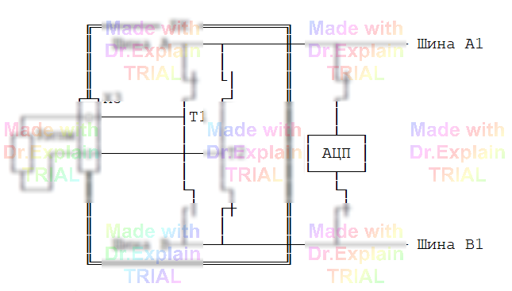
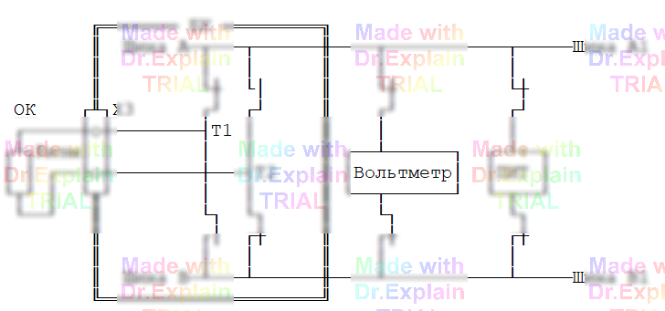

5.2.2 Команда ПР (Проверка Релейная)
Команда ПР проверяет цепи на сообщение и разобщение по двух-проводной схеме. Подключение точек ОК выполняет релейный коммутатор. Проверяемые цепи задаются в формате ССИРТ.
Синтаксис
<метка> ПР [<режимы>] <список_цепей_ССИРТ>
Доступные ключи
ЗР— границы для разобщения;ЗС— границы для сообщения;С— усреднение результатов;П— проверка полярности;И— переполюсовка (повторная проверка);Г— ручной ввод границ;Т1— задержка 20 мс перед измерением;Т— использование ПИТ + вольтметр вместо АЦП;Н— низковольтный режим (0 .3 В / 2 мА до 100 Ω).
Примеры
225 ПР Ом<10, И, Г, С *ССИРТ*
220 ПР 50<Ом, 4В, 10мА, 150мс, Т, С, Г *ССИРТ*
Схема измерения (ключ «Т»)

Ток ПИТ проходит через измеряемое сопротивление, а вольтметр фиксирует
падение напряжения на нём. Значение сопротивления вычисляется как
U / I. Плюсы — можно задать точный ток обтекания.
Минусы — в измерение попадает сопротивление проводов
и контактов реле; при длинных соединительных проводах это даёт существенную
погрешность. Для её компенсации используют четырёхпроводную схему
(РТ) или поправку проводов (ЭТ).
Схема измерения (без ключа «Т»)

При наличии АЦП измерения выполняются значительно быстрее, чем во «второй» схеме с вольтметром, так как АЦП менее инерционен. Недостаток тот же — в результат попадает сопротивление соединительных линий, из-за чего для длинных проводов нужна коррекция или переход к четырёхпроводной схеме.
Стандартные режимы по умолчанию
| Диапазон, R | Вольтаж, U | Сила тока, I | Погрешность, % |
|---|---|---|---|
| R ≤ 10 Ω | 4 В | 20 мА | ±0.8 Ω + 1 % R |
| 10 Ω < R ≤ 1 kΩ | 10 В | 10 мА | ±0.8 Ω + 1 % R |
| 1 kΩ < R ≤ 10 kΩ | 10 В | 1 мА | ±0.8 Ω + 1 % R |
| 10 kΩ < R ≤ 100 kΩ | 10 В | 0.1 мА | ±0.8 Ω + 1 % R |